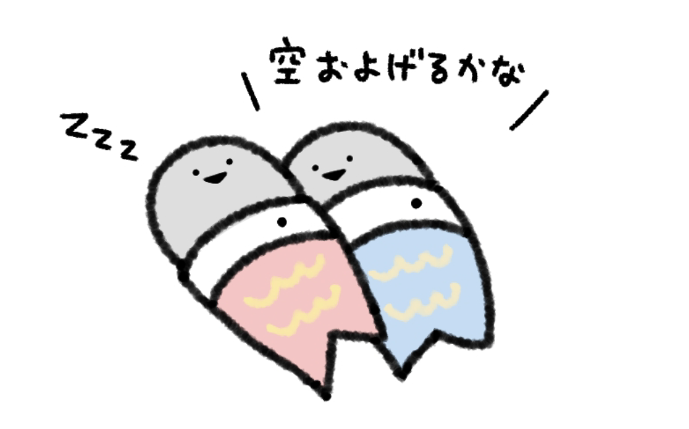
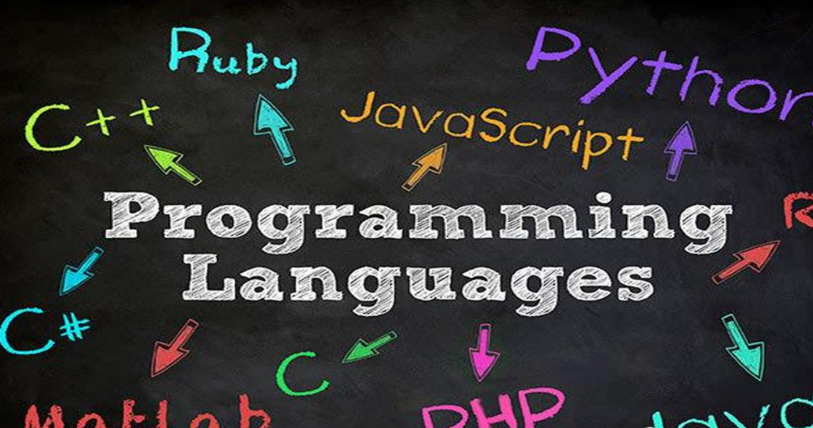
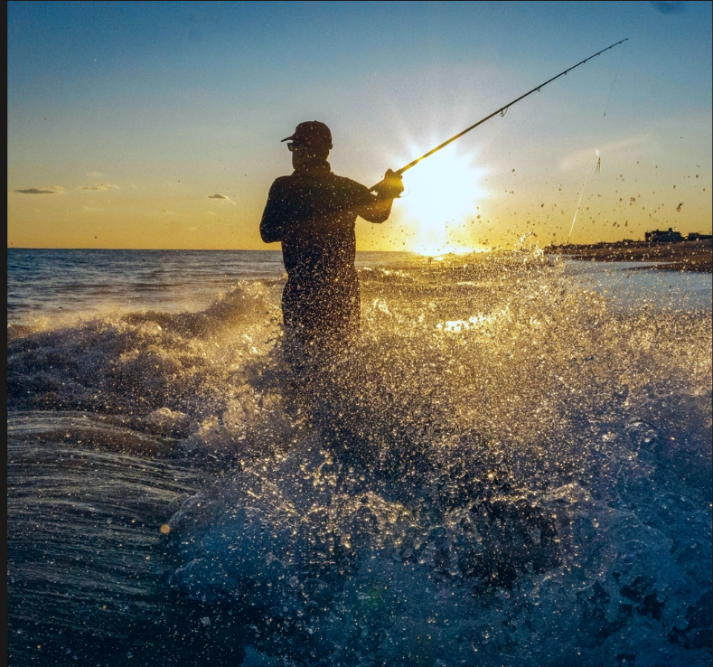

HTML
Semantic structure, headings, links, images, forms, and accessible page organization.
Student Web Developer
I am Bob Xia, a high school student with a conditional offer from the University of Toronto. I am learning web development because I enjoy solving problems and turning ideas into real projects.

Programming learner, fishing enthusiast, and cycling fan.
About Me
I started learning coding in 2024 and quickly became interested in how websites are planned, designed, built, tested, and improved. As a high school student preparing for university, I want to keep improving my technical skills and my ability to communicate ideas through digital work.
Skills
Semantic structure, headings, links, images, forms, and accessible page organization.
Responsive layouts, Flexbox, Grid, color systems, animations, hover effects, and typography.
Interactive buttons, form validation, navigation toggles, modals, and dynamic content changes.
Planning for users, testing ideas, improving clarity, and making design decisions with purpose.
Portfolio

Programming helps me develop logical thinking. I enjoy building small web pages, solving problems, and learning how HTML, CSS, and JavaScript work together.
This portfolio itself is an example of my learning: it includes semantic HTML, responsive CSS, animations, and JavaScript interactions.

Fishing teaches patience, observation, and focus. Those skills also help me when debugging code or improving a project step by step.
I chose fishing as part of my portfolio because it shows a quieter side of my personality and my ability to stay calm while solving problems.
Cycling gives me energy and discipline. It reminds me that progress comes from consistent practice, whether I am training physically or learning to code.
Cycling also influenced the website's style: I wanted the design to feel active, bright, and forward-moving.
UN Global Goal
I selected Zero Hunger because food security is connected to health, education, fairness, and opportunity. A world without hunger gives more people the chance to learn, work, and build a better future.
As a web developer, I can use websites to share information, explain problems clearly, and help people connect with solutions such as donations, volunteering, and community food programs.
Education
I am currently a high school student and have received a conditional offer from the University of Toronto. This motivates me to keep developing strong academic habits and practical technical skills.
Accessibility Statement
AI Chat